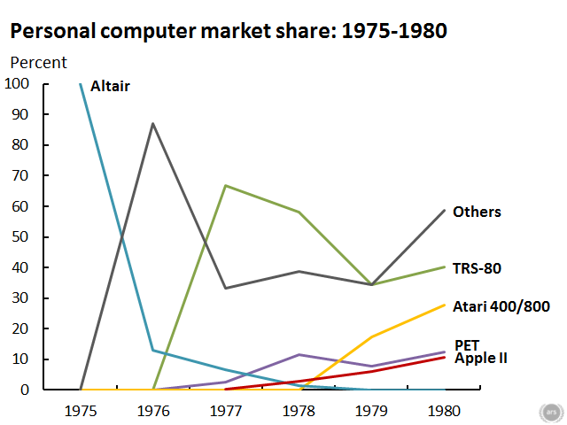
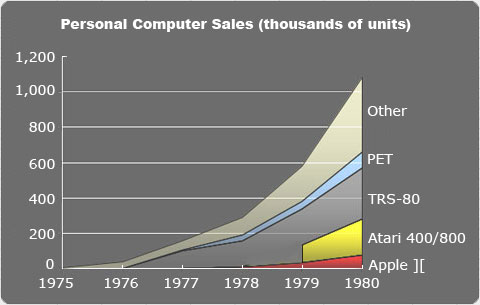

Below are two graphs that show us the market share and the number of sales of personal computers from the emergence of the first personal computer Altair in 1975 to the year 1980. We can see that Apple does not even appear on the graph until late 1977 but from then on slowly and steadily starts growing and eventually reaches 10% of the market share and about 70-80 thousand units sold in 1980. ()()

